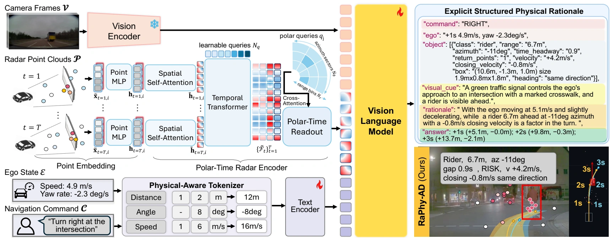
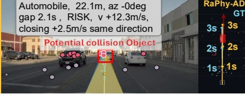

Physical-Aware Tokenizer
Represent a numerical value and its physical unit as one atomic token, preserving physical meaning and reducing fragmentation.
RaPhy-AD: Radar-Aware Foundation Model with Explicit Physical Chain-of-Thought for Autonomous Driving
Beyond what a scene looks like. RaPhy-AD reasons about how far objects are and how they move—using physical measurements from radar.
Nighttime driving along a narrow residential street lined with parked cars. The video shows radar observations, physical reasoning, and the predicted trajectory together.
Select a scene below to explore. Videos start muted; playback and sound controls are available in the player.
Lower average trajectory error
vs. Alpamayo 1 on PhysicalAI-AVAverage L2 trajectory error
RaPhy-AD · SFT + GRPOZero-shot average L2 error
nuScenes · no target-dataset trainingVision-language models can explain a driving scene without accurately grounding their reasoning in distance and relative motion. RaPhy-AD addresses this physical-grounding gap by bringing millimeter-wave radar into the reasoning process.
Radar provides explicit range, azimuth, and Doppler-based radial velocity. Together with camera observations and ego state, these measurements support a structured physical rationale before the model predicts a future trajectory.
Read the full abstract ↗Camera + radar + ego state
Range · azimuth · radial velocity
Structured physical rationale
Future ego trajectory
Two complementary representations.
A two-stage learning strategy.

Represent a numerical value and its physical unit as one atomic token, preserving physical meaning and reducing fragmentation.
Convert sparse, multi-frame radar points into model-compatible tokens while preserving time, azimuth sectors, and range bins.
Radar-aware supervised fine-tuning builds physical knowledge. GRPO with verifiable rewards refines numerical reasoning and trajectory prediction.
Trajectory L2 error in meters.
Lower is better.
| Method | 1s L2 | 2s L2 | 3s L2 | Average |
|---|---|---|---|---|
| Alpamayo 1 | 0.088 | 0.261 | 0.527 | 0.292 |
| Alpamayo 1.5 | 0.091 | 0.303 | 0.653 | 0.349 |
| DriveWAM | 0.119 | 0.305 | 0.602 | 0.342 |
| SimWAM | 0.155 | 0.295 | 0.556 | 0.335 |
| RaPhy-AD (SFT + GRPO) | 0.072 | 0.126 | 0.236 | 0.144 |
Reported evaluation uses 1,287 trajectory anchors from 1,210 held-out clips. Alpamayo uses four cameras; RaPhy-AD uses one camera plus radar. These are reported trajectory-prediction results, not evidence of closed-loop driving safety. All values are taken from the supplied manuscript.
Inspect three examples from Figure 3.

PAPER FIGURE · STATIC EXAMPLERaPhy-AD identifies an automobile 22.1 m ahead with +2.5 m/s relative motion and predicts a trajectory more closely aligned with the ground truth in the shown example.
View the complete comparison ↗Explore the architecture, training strategy, experiments, and ablations in the full manuscript.
Open manuscript ↗Anonymous review manuscript · ICLR 2027 submission
Code and model links have not been provided.